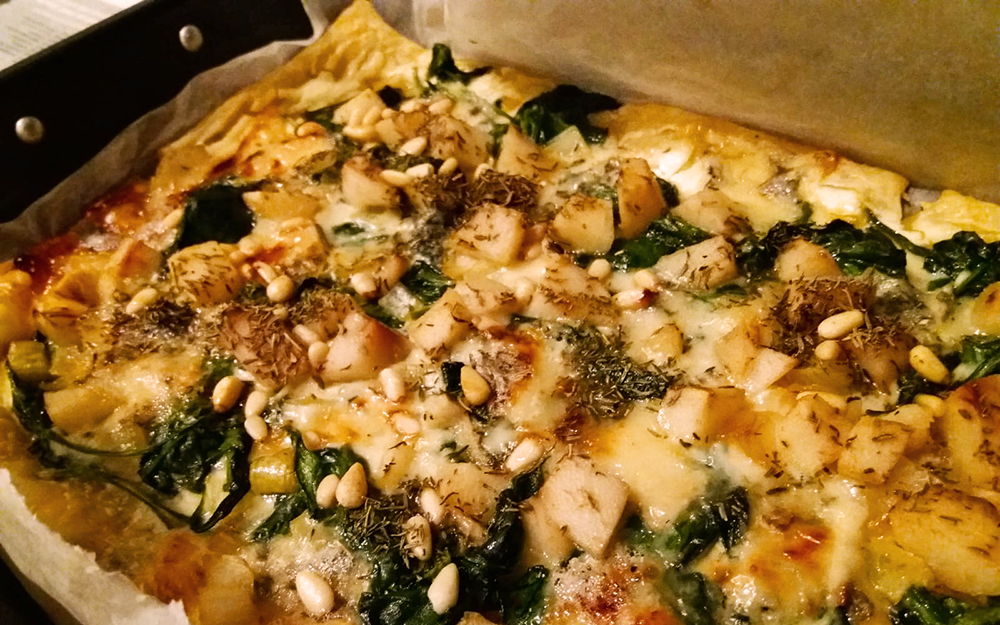

plaattaart met spinazie en peer
Ook lekker als hapje!

Bereidingsduur: 60 minuten
Aantal personen: 2
Ingrediënten:
2 peren
270 gram bladerdeeg
200 gram spinazie
150 gram gorgonzola
1 ui
150 gram creme fraiche
2 theelepels honing
2 eetlepels tijm
1 handje pijnboompitten
2 peren
270 gram bladerdeeg
200 gram spinazie
150 gram gorgonzola
1 ui
150 gram creme fraiche
2 theelepels honing
2 eetlepels tijm
1 handje pijnboompitten
Instructies:
1. Verwarm de oven voor op 200 graden en snipper de ui.
2. Leg bakpapier op een pakplaat en verdeel de plakjes bladerdeeg erover zodat de bodem bedekt is. Smeer de crème fraiche over het bladerdeeg.
3. Bak in etappes de spinazie tot deze slinkt. Bak nu ook de ui erbij.
4. Schil de peren en snijd in blokjes. Snijd nu ook de kaas in kleine blokjes.
5. Verdeel de spinazie en ui over het bladerdeeg. Leg de stukjes peer en kaas erop en bestrooi met tijm en pijnboompitten. Verdeel de honing over de taart.
6. Bak de taart in circa 30 minuten in de oven.
1. Verwarm de oven voor op 200 graden en snipper de ui.
2. Leg bakpapier op een pakplaat en verdeel de plakjes bladerdeeg erover zodat de bodem bedekt is. Smeer de crème fraiche over het bladerdeeg.
3. Bak in etappes de spinazie tot deze slinkt. Bak nu ook de ui erbij.
4. Schil de peren en snijd in blokjes. Snijd nu ook de kaas in kleine blokjes.
5. Verdeel de spinazie en ui over het bladerdeeg. Leg de stukjes peer en kaas erop en bestrooi met tijm en pijnboompitten. Verdeel de honing over de taart.
6. Bak de taart in circa 30 minuten in de oven.